Java 中的所有函數都属于某个类的方法(标准术语将其称为方法， 而不是成员函数)。 因此， Java 中的 main 方法必须有一个外壳类。 读者有可能对C++中的静态成员函数(staticmemberfunctions) 十分熟悉。这些成员函 数定义在类的内部， 并且不对对象进行操作。 Java 中的 main 方法必须是静态的。 最后， 与 C/C++ 一样， 关键字 void 表示这个方法没有返回值， 所不同的是 main 方法没有为操作系统返回退出代码。如果main 方法正常退出， 那么 Java 应用程序的退出代码为 0表示成功地运行了程序。 如果希望在终止程序时返回其他的代码， 那就需要调用 System, exit 方法。
在Java中，一共有8种基本类型 ( primitive type ), 其中有 4 种整型、 2 种浮点类型、 1 种用于表示 Unicode 编码的字符单元的字符类型 char ( 请参见论述 char 类型的章节)和 1 种用于表示真值的 boolean 类型。
在C和C++中，int和long等类型的大小与目标平台相关。在8086这样的 16 位处理器上整型数值占 2 字节; 不过， 在 32 位处理器 (比如 Pentium 或 SPARC) 上， 整型数值则为 4 字节。 类似地， 在 32 位处理器上 long 值为 4 字节， 在 64 位处理器上则 为 8 字节。 由于存在这些差别， 这对编写跨平台程序带来了很大难度。
在 Java 中， 所有 的数值类型所占据的字节数量与平台无关。注意， Java 没有任何无符号(unsigned) 形式的 int、long、short 或 byte 类型。
在 Java 中， 不区分变量的声明与定义。
在 Java 中， 利用关键字 final 指示常量，常量名使用全大写。
在 Java 中， 经常希望某个常量可以在一个类中的多个方法中使用， 通常将这些常量称为类常量。 可以使用关键字 static final设置一个类常量。const 是 Java 保留的关键字， 但目前并没有使用。 在 Java 中， 必须使用 final定义常量。
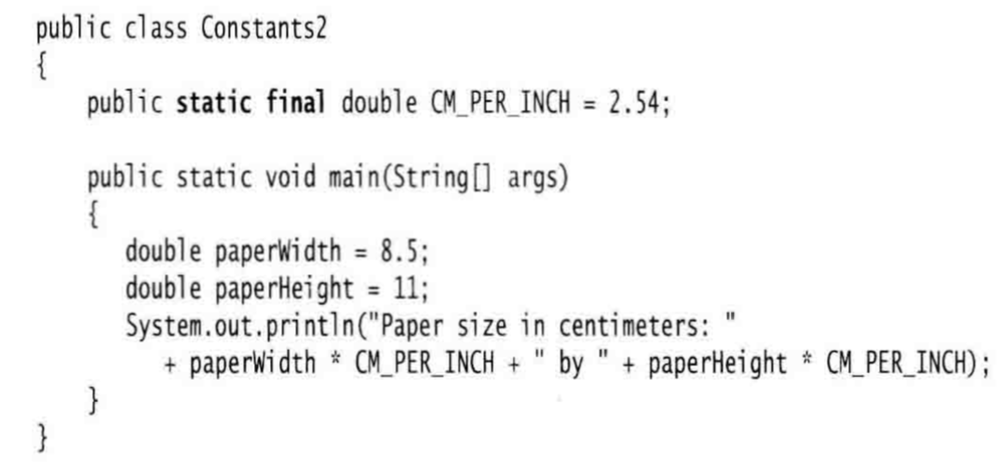
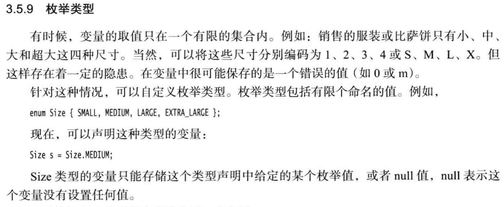
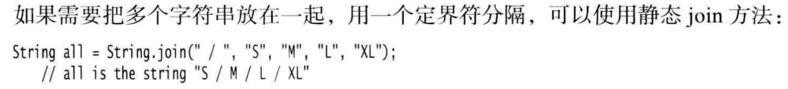
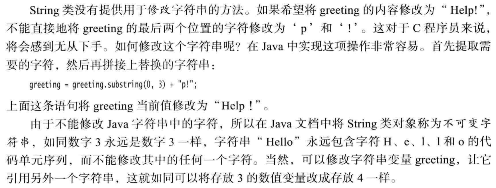
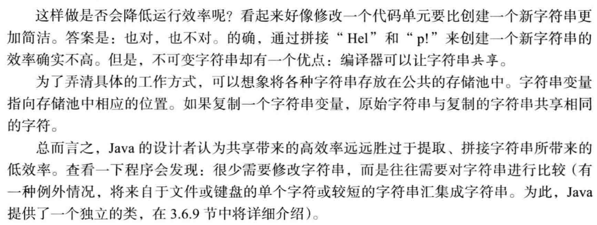
可以使用 equals 方法检测两个字符串是否相等。对于表达式: s.equals(t)。如果虚拟机始终将相同的字符串共享， 就可以使用==运算符检测是否相等。但实际上只有字符串常量是共享的， 而 + 或 substring 等操作产生的结果并不是共享的。 因此，千万不要使用 == 运算符测试字符串的相等性， 以免在程序中出现bug。
空串 “” 是长度为 0 的字符串。 可以调用以下代码检查一个字符串是否为空: if (str.lengthQ = 0)或
if (str.equals(“”)) 空串是一个 Java 对象， 有自己的串长度(0 ) 和内容(空)。不过， String 变量还可以存 放一个特殊的值，名为null, 这表示目前没有任何对象与该变量关联(关于null的更多信息 请参见第4章)。要检查一个字符串是否为null, 要使用以下条件: if (str == null) 。有时要检查一个字符串既不是 null 也不为空串， 这种情况下就需要使用以下条件:if (str != null && str.lengthO != 0)。首先要检查 str 不为 null 在第 4 章会看到 如果在一个null值上调用方法 会出现错误。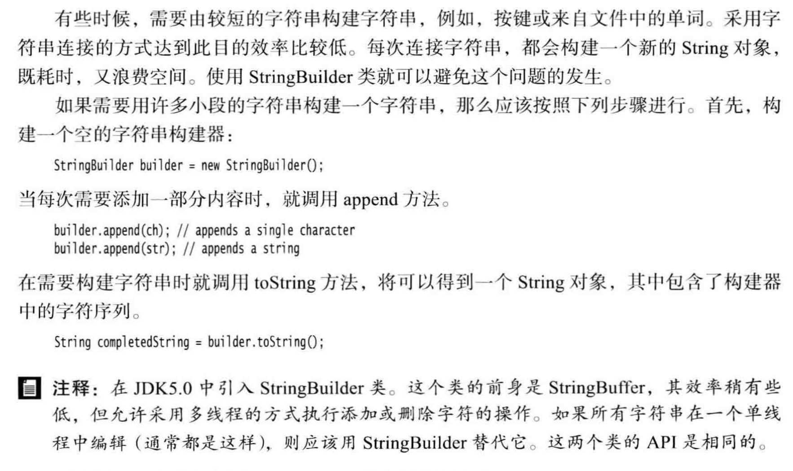
 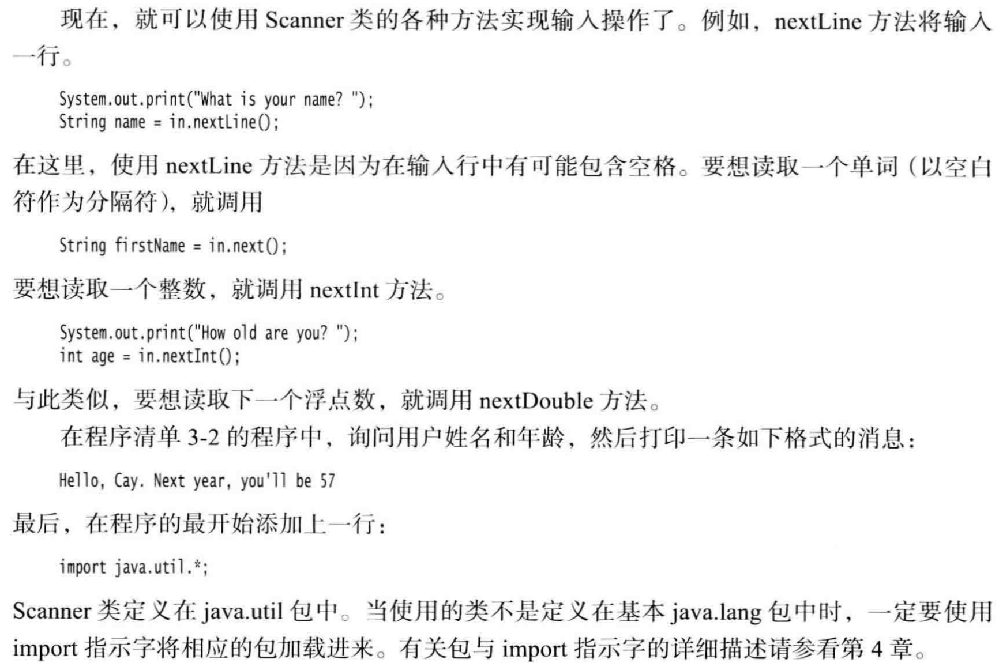
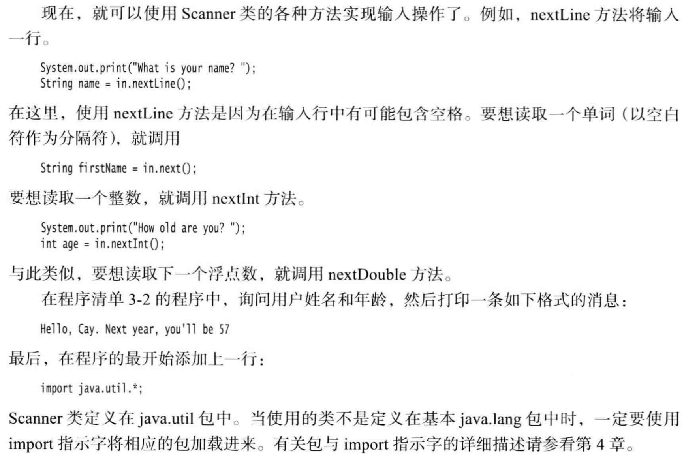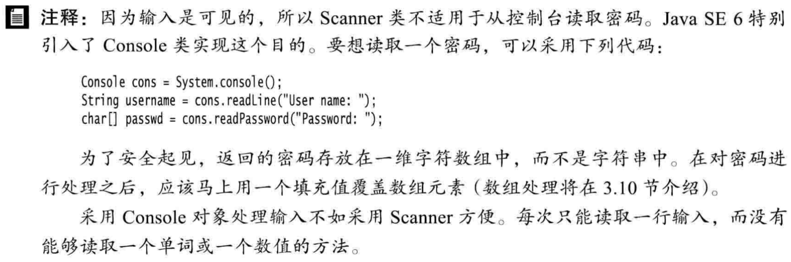
在 printf 中， 可以使用多个参数， 例如:
%s. Next year, you'll be SSd", name, age) ;``` 1
2
- 可以使用静态的 String.format 方法创建一个格式化的字符串， 而不打印输出:``` String message = String.format("Hello, %s. Next year, you'll be %d", name, age);new DateO); ```这条语句将用下面的格式打印当前的日期和时间: Mon Feb 09 18:05:19 PST 2015 1
2
3
4
5
6
7
8
9
10
11
12
13
14
15
16
17
18
19
20
21
22
23
24
- 要想对文件进行读取， 就需要一个用 File 对象构造一个 Scanner 对象， 如下所示:
```Scanner in = new Scanner(Paths.get("niyflle.txt"), "UTF-8");```如果文件名中包含反斜杠符号， 就要记住在每个反斜杠之前再加一个额外的反斜杠:“ c:\\mydirectory\\myfile.txt”。
- 要想写入文件， 就需要构造一个 PrintWriter 对象。 在构造器中， 只需要提供文件名:
``PrintWriter out = new PrintlulriterC'myfile.txt", "UTF-8");``如果文件不存在， 创建该文件。
- 
- 
- 
- int[] a;只是声明变量a，而并没有将a初始化为真正的数组，应该用new创建数组，int[] a = new int[100];
- for (int element : a) 循环数组a中的每一个元素”(for each element in a)。
- 创建数组对象并同时赋予初始值的简化书写形式 int[] smallPrimes = { 2, 3, 5, 7, 11, 13 };在不创建新变量的情况下重新初始化一个数组smallPrimes = new int[] { 17, 19, 23, 29, 31, 37 };smallPrimes = a.clone()表示数组值的赋值而非变量的等价，与smallPrimes = Arrays.copyOf(a, beginindex,endindex)作用相同。
- 每一个 Java 应用程序都有一个带 String arg[]，参数的 main 方法。 这个参数表明 main 方法将接收一个字符串数组， 也就是命令行参数。
- 
- Java 实际上没有多维数组， 只有一维数组。多维数组被解释为“ 数组的数组。”表达式 balancesfi] 引用第 i 个子数组， 也就是二维表的第 i 行。 它本身也是一个数组，balances[i] [j]引用这个数组的第 j 项。Java可以方便地构造一个“ 不规则” 数组， 即数组的每一行有不同的长度。```int[][] odds = new int[NMAX + 1] [];for (int n = 0; n <= NMAX; n++) odds[n] = new int[n+1];可以将实例域定义为 final 构建对象时必须初始化这样的域。也就是说， 必须确保在每一个构造器执行之后， 这个域的值被设置， 并且在后面的操作中， 不能够再对它进行修改。
private final String name;可以将Employee类中的name域声明为final, 因为在对象构建之后，这个值不会再被修改， 即没有 setName 方法。静态域：如果将域定义为 static , 每个类中只有一个这样的域。现在， 每一个雇员对象都有一个自己的 id 域， 但这个类的所有实例将共享一个 Nextld域。 换句话说， 如果有 1000 个 Employee 类的对象， 则有 1000 个实例域 id。 但是， 只有一个静态域 nextld。 即使没有一个雇员对象， 静态域 nextld 也存在。 它属于类， 而不属于任何独立的对象。
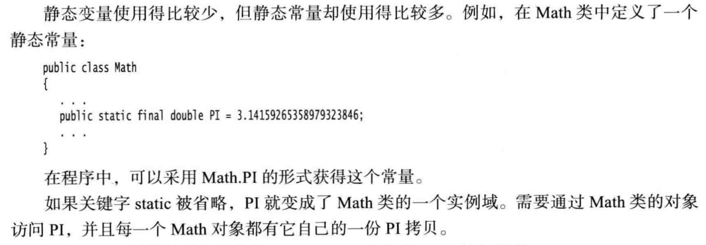
静态方法是一种不能向对象实施操作的方法。例如，Math类的 pow方法就是一种静态方法。表达式：
Math.pow(x, a)在运算时，不使用任何Math对象。换句话说，就是没有隐式参数this。Employee类的静态方法不能访问Id实例域， 因为它不能操作对象。但是，静态方法可以访问自身类中的静态域。下面是使用这种静态方法的一个示例：可以通过类名调用这个方法：int n = Employee.getNextId();main 方法也是一个静态方法。main 方法不对任何对象进行操作。 事实上， 在启动程序时还没有任何一个对象。 静态的 main 方法将执行并创建程序所需要的对象。
按值调用 (call by value) 表示方法接收的是调用者提供的值。而按引用调用 (call by reference)表示方法接收的是调用者提供的变量地址。一个方法不能修改一个基本数据类型的参数 (即数值型或布尔型)。一个方法可以改变一个对象参数的状态。
重载：有些类有多个构造器，如
StringBuilder messages = new StringBuilder();或者StringBuilder todoList = new StringBuilder('To do:\n";)这种特征叫做重载(overloading。) 如果多个方法(比如， StringBuilder 构造器方法)有相同的名字、不同的参数， 便产生了重载。 编译器必须挑选出具体执行哪个方法， 它通过用
各个方法给出的参数类型与特定方法调用所使用的值类型进行匹配来挑选出相应的方法。 如果编译器找不到匹配的参数， 就会产生编译时错误。默认域初始化：如果构造器没有显式的给域赋初值，那会被自动赋为默认值，但一般不要这样做。
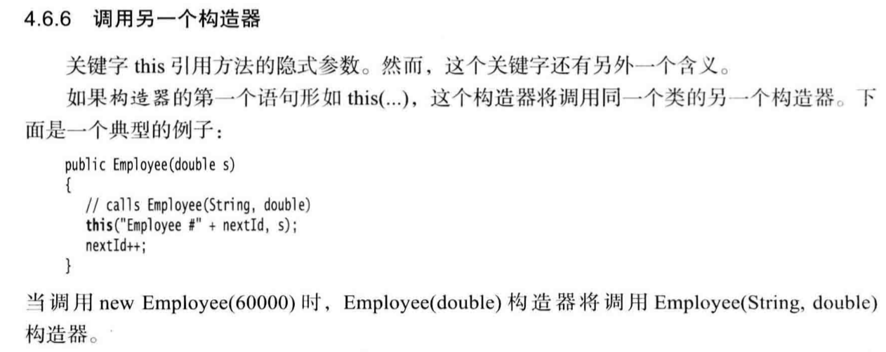
在 Manager 与 Employee 之间存在着明显的“ is-a”(是)关系， 每个经理都是一名雇员:“ is-a” 关系是继承的一个明显特征。
关键字 extends 表明正在构造的新类派生于一个已存在的类。 已存在的类称为超类( superclass)、 基类(base class) 或父类(parent class); 新类称为子类(subclass、) 派生类
(derivedclass) 或孩子类(childclass)。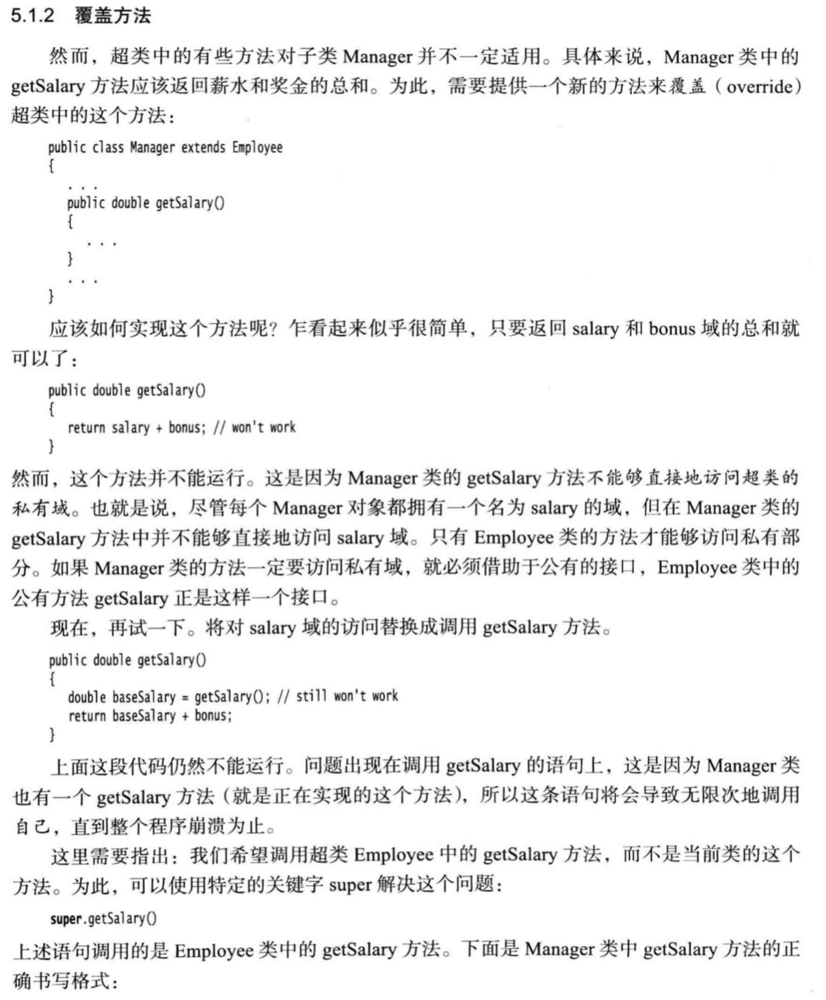
由于 Manager 类的构造器不能访问 Employee 类的私有域， 所以必须利用 Employee 类的构造器对这部分私有域进行初始化， 我们可以通过 super 实现对超类构造器的调用。
super(n, s, year, month, day);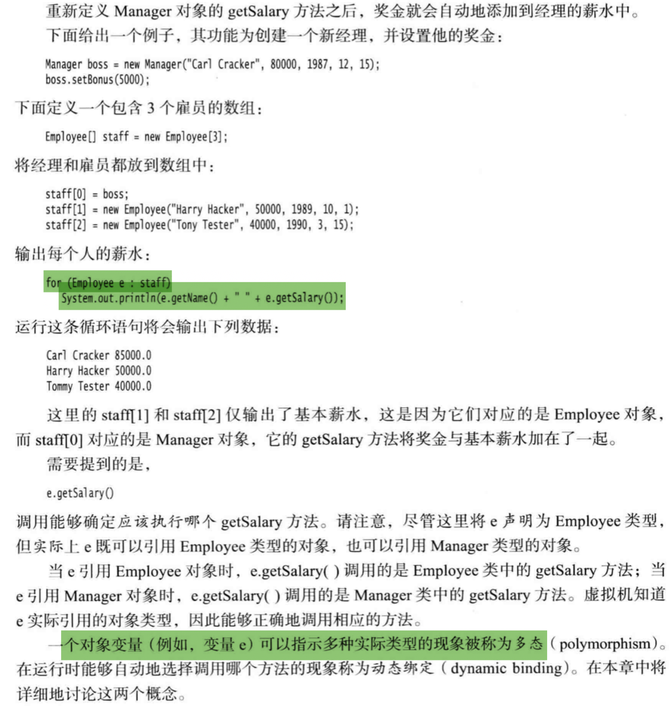
如果在定义类的时候使用了 final 修饰符就表明这个类是 final 类，final类不允许扩展。
类也可以进行强制类型转换。
如果自下而上在类的继承层次结构中上移， 位于上层的类更具有通用性， 甚至可能更加
抽象。从某种角度看， 祖先类更加通用， 人们只将它作为派生其他类的基类， 而不作为想使用的特定的实例类。抽象方法充当着占位的角色， 它们的具体实现在子类中。
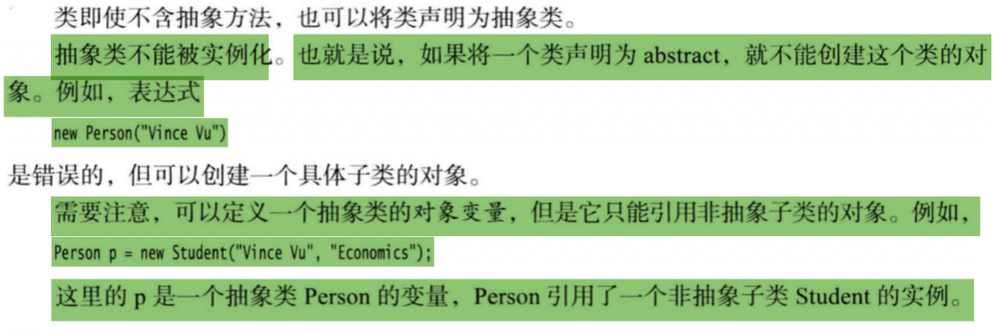
1 ) 仅对本类可见 private
2 ) 对所有类可见 public
3 ) 对本包和所有子类可见 protected
4 ) 对本包可见—默认(很遗憾，) 不需要修饰符
Object 类是 Java 中所有类的始祖， 在 Java 中每个类都是由它扩展而来的。
可以使用 Object 类型的变量引用任何类型的对象:
Object obj = new EmployeeC'Harry Hacker", 35000);在 Java 中， 只有基本类型 ( primitive types ) 不是对象， 例如， 数值、 字符和布尔类型的 值都不是对象。 所有的数组类塱， 不管是对象数组还是基本类型的数组都扩展了 Object 类。
- Object类中的equals方法用于检测一个对象是否等于另外一个对象。在Object类中，这个方法将判断两个对象是否具有相同的引用。如果两个对象具有相同的引用，它们一定是相等的。在 Object 中还有一个重要的方法， 就是 toString 方法， 它用于返回表示对象值的字符串。
泛型数组列表：
ArrayList<Employee> staff = new ArrayListo();ArrayList 是一个采用类型参数 (type parameter ) 的泛型类(generic class )。 为了指定数组列表保存的元素对象类型， 需要用一对尖括号将类名括起来加在后面。这个数组可以动态的改变数组大小。使用 add 方法可以将元素添加到数组列表中staff.add(new Employee("Harry Hacker",...));。staff,size()方法将会返回数组列表中包含的实际元素数目。- 数组列表自动扩展容量的便利增加了访问元素语法的复杂程度。 使用 get 和 set 方法实现访问或改变数组元素的操作， 而不使用人们喜爱的 [ ] 语法格式。
staff.set(i, harry):使用 add 方法为数组添加新元素， 而不要使用 set 方法， 它只能替换数组中已经存在的元素内容。 - 除了在数组列表的尾部追加元素之外， 还可以在数组列表的中间插入元素， 使用带索引参数的 add 方法。
staff.add(n, e);为了插人一个新元素， 位于 n 之后的所有元素都要向后移动一个位置。 如果插人新元素后， 数组列表的大小超过了容量， 数组列表就会被重新分配存储空间。 - 同样地， 可以从数组列表中间删除一个元素。
Employee e = staff.remove(n);位于这个位置之后的所有元素都向前移动一个位置， 并且数组的大小减 1。
- 数组列表自动扩展容量的便利增加了访问元素语法的复杂程度。 使用 get 和 set 方法实现访问或改变数组元素的操作， 而不使用人们喜爱的 [ ] 语法格式。
Java核心知识
----------------------------- 我是有底线 ~..~ ------------------------------